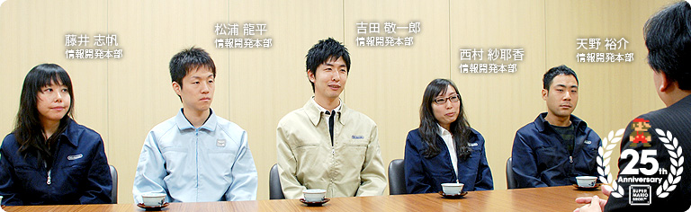

### 「スーパーマリオ２５周年」

<DIV ID="volbox-5"><P CLASS="volnum1"><A CLASS="btn-volnum1" TITLE="社長の代わりに糸井重里さんが訊く" HREF="../vol1/index.html">社長の代わりに糸井重里さんが訊く
<P CLASS="volnum2"><A CLASS="btn-volnum2" TITLE="ファミコンとマリオ 篇" HREF="../vol2/index.html">ファミコンとマリオ 篇
<P CLASS="volnum3"><A CLASS="btn-volnum3" TITLE="『スーパーマリオ』シリーズ開発経験者 篇 その１" HREF="../vol3/index.html">『スーパーマリオ』シリーズ開発経験者 篇 その１
<P CLASS="volnum4"><A CLASS="btn-volnum4s" TITLE="『スーパーマリオ』シリーズ開発経験者 篇 その２">『スーパーマリオ』シリーズ開発経験者 篇 その２
<P CLASS="volnum5"><A CLASS="btn-volnum5" TITLE="『スーパーマリオ』生みの親たち 篇" HREF="../vol5/index.html">『スーパーマリオ』生みの親たち 篇

<DIV ID="main-visual">
<H2>
<DIV ID="pagebox-wrap">
<DIV CLASS="pagebox">
<P CLASS="pagenums"><A>1. １９８０年代生まれ、それぞれの『マリオ』体験
<P CLASS="pagenum"><A HREF="index2.html">2. 「近所のお兄ちゃん」に教えられて
<P CLASS="pagenum"><A HREF="index3.html">3. 遊び手からつくり手に変わって
<P CLASS="pagenum"><A HREF="index4.html">4. 「任天堂に入りたい」
<P CLASS="pagenum"><A HREF="index5.html">5. ２５年経っても変わらないこと
<P CLASS="pagenum"><A HREF="index6.html">6. 『マリオ』の遊び方とつくり方

<DIV>

<DIV ID="int-box-wrap">
<H3>
<DIV CLASS="int-box"><DIV CLASS="int-name"><P>岩田
<DIV CLASS="int-text"><P>『スーパーマリオブラザーズ』２５周年を記念した<br>『スペシャルパック』の発売をきっかけに、<br>これまでいろんな人たちから話を訊いてきました。<br>「社長が訊く」を読んでおられる人の中には、<br>「この企画でまだ訊くの？」とあきれている方もいるかもしれませんが、<br>今回は“１９８０年代生まれの開発者たち”がテーマです。<br>&nbsp;<br>１９８０年代に生まれたみなさんは、ものごころが<br>ついたときにはすでに『スーパーマリオ』<sup>（※1）</sup>が存在していて、<br>言いかえると『マリオ』といっしょに育ったわけですよね。<br>そのような人たちが開発者になり、<br>ものをつくるというのはどういうことなのか、<br>そんな話を訊きたくて、みなさんに集まっていただきました。<br>今日はよろしくお願いいたします。
<DIV CLASS="clear"><DIV CLASS="int-box"><DIV CLASS="int-name"><P>一同
<DIV CLASS="int-text"><P>よろしくお願いいたします。
<DIV CLASS="notes-box"><DIV CLASS="notes-num"><P>※1
<DIV CLASS="notes-text"><P>『スーパーマリオ』＝『スーパーマリオブラザーズ』。１９８５年９月に、ファミコンで発売されたアクションゲーム。
<DIV CLASS="clear">
<DIV CLASS="clear">

<DIV CLASS="clear">
<DIV CLASS="clear"><DIV CLASS="int-box"><DIV CLASS="int-name"><P>岩田
<DIV CLASS="int-text"><P>では最初に自己紹介と、<br>よろしければ生まれ年などもお願いできればと思います。
<DIV CLASS="clear"><DIV CLASS="int-box"><DIV CLASS="int-name"><P>天野
<DIV CLASS="int-text"><P>はい。情報開発本部 制作部の天野です。<br>『NewスーパーマリオWii』<sup>（※2）</sup>ではゲーム全体の構成部分の<br>プランナーとして、ディレクターのサポートを担当しました。<br>僕は１９８１年生まれなので、４歳のときに<br>『スーパーマリオ』が発売されたのですが、<br>その頃はまだファミコンを持っていませんでした。
<DIV CLASS="clear"><DIV CLASS="img-photo">
<DIV CLASS="int-box"><DIV CLASS="int-name"><P>岩田
<DIV CLASS="int-text"><P>じゃあ、『マリオ』との出会いはけっこう遅いんですか？
<DIV CLASS="clear"><DIV CLASS="int-box"><DIV CLASS="int-name"><P>天野
<DIV CLASS="int-text"><P>いえ、友だちの家にありましたので・・・。
<DIV CLASS="clear"><DIV CLASS="int-box"><DIV CLASS="int-name"><P>岩田
<DIV CLASS="int-text"><P>友だちの家で遊び倒したということですか？
<DIV CLASS="clear"><DIV CLASS="int-box"><DIV CLASS="int-name"><P>天野
<DIV CLASS="int-text"><P>はい（笑）。初代『マリオ』と『マリオ３』<sup>（※3）</sup>は友だちの家で遊び、<br>スーパーファミコンが出てから、ようやく自分の家で遊べるようになって、<br>『マリオワールド』<sup>（※4）</sup>にとくに夢中になりました。
<DIV CLASS="notes-box"><DIV CLASS="notes-num"><P>※2
<DIV CLASS="notes-text"><P>『NewスーパーマリオWii』＝『New スーパーマリオブラザーズ Wii』。２００９年１２月に、Wii用ソフトとして発売されたアクションゲーム。
<DIV CLASS="clear">
<DIV CLASS="clear">
<DIV CLASS="notes-box"><DIV CLASS="notes-num"><P>※3
<DIV CLASS="notes-text"><P>『マリオ３』＝『スーパーマリオブラザーズ３』。１９８８年１０月に、ファミコン用ソフトとして発売されたアクションゲーム。
<DIV CLASS="clear">
<DIV CLASS="clear">
<DIV CLASS="notes-box"><DIV CLASS="notes-num"><P>※4
<DIV CLASS="notes-text"><P>『マリオワールド』＝『スーパーマリオワールド』。スーパーファミコンと同時発売されたアクションゲーム。１９９０年１１月発売。
<DIV CLASS="clear">
<DIV CLASS="clear">

<DIV CLASS="clear">
<DIV CLASS="clear"><DIV CLASS="int-box"><DIV CLASS="int-name"><P>西村
<DIV CLASS="int-text"><P>同じく制作部の西村です。<br>『NewスーパーマリオWii』ではデザインを担当しました。<br>わたしは１９８２年生まれで、<br>気づいたときには弟と『マリオ』を遊んでいました。
<DIV CLASS="clear"><DIV CLASS="img-photo">
<DIV CLASS="int-box"><DIV CLASS="int-name"><P>岩田
<DIV CLASS="int-text"><P>ファミコンが出たのは１歳のときで、<br>『スーパーマリオ』が出たのが３歳のときということになりますね。
<DIV CLASS="clear"><DIV CLASS="int-box"><DIV CLASS="int-name"><P>西村
<DIV CLASS="int-text"><P>はい。小学生の頃にファミコンにすごく夢中になって、<br>弟と「自分のほうがうまい」と言い合って、<br>コントローラの取り合いをしながら遊んでいましたし、<br>ゲームボーイでも『マリオ』<sup>（※5）</sup>を交代しながら遊んでいたことが<br>楽しい記憶として、いまでも残っています。
<DIV CLASS="notes-box"><DIV CLASS="notes-num"><P>※5
<DIV CLASS="notes-text"><P>ゲームボーイでも『マリオ』＝『スーパーマリオランド』。１９８９年４月に、ゲームボーイ用ソフトとして発売されたアクションゲーム。
<DIV CLASS="clear">
<DIV CLASS="clear">

<DIV CLASS="clear">
<DIV CLASS="clear"><DIV CLASS="int-box"><DIV CLASS="int-name"><P>吉田
<DIV CLASS="int-text"><P>同じく制作部の吉田です。<br>『NewスーパーマリオWii』では主に敵のプログラムを担当しました。<br>西村さんと同じく１９８２年生まれなので、<br>３歳のときに『スーパーマリオ』が発売されて、<br>ファミコンは兄の部屋に置いてありました。<br>確か、僕が小学１年生のときには、<br>僕は兄より早く帰ってこられるものですから<br>兄の部屋に忍び込んで、<br>こっそり『スーパーマリオ』を遊んでいたんです。
<DIV CLASS="clear"><DIV CLASS="img-photo">
<DIV CLASS="int-box"><DIV CLASS="int-name"><P>岩田
<DIV CLASS="int-text"><P>お兄ちゃんの部屋に忍び込んで<br>『マリオ』を遊んでいたんですか（笑）。
<DIV CLASS="clear"><DIV CLASS="int-box"><DIV CLASS="int-name"><P>吉田
<DIV CLASS="int-text"><P>はい。で、しばらく遊んでいるとお兄ちゃんが帰ってきて、<br>「出ていけ！」と怒られるんですけど、<br>翌日にはまた忍び込んで遊ぶようなことを繰り返していました。
<DIV CLASS="clear"><DIV CLASS="int-box"><DIV CLASS="int-name"><P>一同
<DIV CLASS="int-text"><P>（笑）
<DIV CLASS="clear"><DIV CLASS="int-box"><DIV CLASS="int-name"><P>松浦
<DIV CLASS="int-text"><P>技術制作部の松浦です。『NewスーパーマリオWii』では<br>デバッグや「おたからムービー」などにかかわりました。<br>生まれたのは１９８４年ですので・・・。
<DIV CLASS="clear"><DIV CLASS="img-photo">
<DIV CLASS="int-box"><DIV CLASS="int-name"><P>岩田
<DIV CLASS="int-text"><P>ファミコンが出た翌年ですね。
<DIV CLASS="clear"><DIV CLASS="int-box"><DIV CLASS="int-name"><P>松浦
<DIV CLASS="int-text"><P>はい。ですので、ものごころついたときから<br>ファミコンは家にあったんですけど、<br>小学生になるとスーパーファミコンが全盛期を迎えて、<br>友だちはみんなスーパーファミコンで遊んでいたんです。<br>そこで僕も「買ってー」と親におねだりしたのですが、<br>「ファミコンがあるでしょ！」と、冷たくあしらわれてしまって、<br>１９９７年に中学校に入るまではゲームボーイも買ってもらえず、<br>ファミコンひと筋でした。
<DIV CLASS="clear"><DIV CLASS="int-box"><DIV CLASS="int-name"><P>岩田
<DIV CLASS="int-text"><P>でも、１９９７年というと<br>NINTENDO64が発売された翌年ですよね（笑）。
<DIV CLASS="clear"><DIV CLASS="int-box"><DIV CLASS="int-name"><P>松浦
<DIV CLASS="int-text"><P>はい。１９９７年に中学生になって、<br>そこでようやくN64と『マリオ６４』<sup>（※6）</sup>を買ってもらえて、<br>めちゃくちゃ遊びまくりました。
<DIV CLASS="notes-box"><DIV CLASS="notes-num"><P>※6
<DIV CLASS="notes-text"><P>『マリオ６４』＝『スーパーマリオ６４』。NINTENDO64と同時に発売された、マリオ初の３Ｄアクションゲーム。１９９６年６月発売。
<DIV CLASS="clear">
<DIV CLASS="clear">

<DIV CLASS="clear">
<DIV CLASS="clear"><DIV CLASS="int-box"><DIV CLASS="int-name"><P>藤井
<DIV CLASS="int-text"><P>制作部サウンドグループの藤井です。<br>『NewスーパーマリオWii』では、コース中のＢＧＭなどを数曲担当しました。<br>わたしは１９８４年生まれで、最初にファミコンを買ってもらったのが<br>たぶん小学校にあがってからで、そのときに・・・。
<DIV CLASS="clear"><DIV CLASS="img-photo">
<DIV CLASS="int-box"><DIV CLASS="int-name"><P>岩田
<DIV CLASS="int-text"><P>『マリオ』もいっしょにやって来たんですね。
<DIV CLASS="clear"><DIV CLASS="int-box"><DIV CLASS="int-name"><P>藤井
<DIV CLASS="int-text"><P>はい。「ソフトをひとつ買っていいよ」と言われて、<br>わたしには弟がいるんですけど、２人で相談して、<br>『マリオ』を買いたいと。
<DIV CLASS="clear"><DIV CLASS="int-box"><DIV CLASS="int-name"><P>岩田
<DIV CLASS="int-text"><P>きょうだいのいる人は、<br>いっしょに遊んだ思い出のある人が多いみたいですね。
<DIV CLASS="clear"><DIV CLASS="int-box"><DIV CLASS="int-name"><P>藤井
<DIV CLASS="int-text"><P>そうですね。<br>ところが、わたしはアクションゲームが苦手で、<br>ひとりで遊んでもすぐにミスをしてしまうので、<br>どちらかというと、弟がプレイしているのを見て<br>いっしょに盛り上がったり、楽しんだりしていた記憶があります。
<DIV CLASS="clear"><DIV CLASS="int-box"><DIV CLASS="int-name"><P>岩田
<DIV CLASS="int-text"><P>わたし自身、ずっとゲームの仕事に関係してきて<br>いつも思うんですが、いいゲームというのは<br>人が遊んでいる姿を見ているだけでも楽しめるんですよね。<br>なかでも『スーパーマリオ』というゲームは、<br>遊んでいる人だけが面白いのではなくて、<br>遊んでいる人の周りにいる人たちがいっしょに手に汗を握って、<br>いっしょに叫んだりもできるんです。<br>藤井さんは、まさにそのギャラリーとしての立場も含めて<br>『スーパーマリオ』を体験されていたんですね。
<DIV CLASS="clear"><DIV CLASS="int-box"><DIV CLASS="int-name"><P>藤井
<DIV CLASS="int-text"><P>はい。楽しんでいました。
<DIV CLASS="clear"><DIV CLASS="int-box"><DIV CLASS="int-name"><P>岩田
<DIV CLASS="int-text"><P>さて、そうやってみなさんが『スーパーマリオ』に出会って、<br>とくに印象に残っていることをお話ししてもらいたいと思います。<br>天野さんは、家にファミコンがなかったという話でしたが・・・。
<DIV CLASS="clear"><DIV CLASS="int-box"><DIV CLASS="int-name"><P>天野
<DIV CLASS="int-text"><P>当時は友だちの家で遊ばせてもらっていました。<br>ただ、そもそも僕は遊び方がよくわからなかったんです。
<DIV CLASS="clear"><DIV CLASS="int-box"><DIV CLASS="int-name"><P>岩田
<DIV CLASS="int-text"><P>ファミコンを持ってる人のほうが圧倒的に有利ですよね。
<DIV CLASS="clear"><DIV CLASS="int-box"><DIV CLASS="int-name"><P>天野
<DIV CLASS="int-text"><P>そうなんです。<br>でも、友だちが遊んでいて失敗するのを見ると、<br>「自分ならできるのに・・・」と思ってしまうんです。
<DIV CLASS="clear"><DIV CLASS="int-box"><DIV CLASS="int-name"><P>岩田
<DIV CLASS="int-text"><P>ああ、あれはすごく不思議ですよね。<br>『スーパーマリオ』というゲームは簡単なわけではないのに、<br>人が失敗するのを見ると、初心者の人でも<br>「自分ならもっとうまくできるはずだ」と、<br>なぜかそう思わせられるところがあって、<br>でも実際にやってみると、そんなにうまくいかないんですよね（笑）。
<DIV CLASS="clear"><DIV CLASS="img-photo">
<DIV CLASS="int-box"><DIV CLASS="int-name"><P>天野
<DIV CLASS="int-text"><P>そうなんです。友だちがミスをして<br>それで交代してもらってもやっぱりできなくて・・・。<br>しかも練習したくても、家にはファミコンがありませんでしたので、<br>家に帰ってから、こうやって・・・<br>（コントローラを握るジェスチャーをしながら）<br>「あそこはこのタイミングでジャンプして」と・・・。
<DIV CLASS="clear"><DIV CLASS="int-box"><DIV CLASS="int-name"><P>岩田
<DIV CLASS="int-text"><P>イメージトレーニングですか（笑）。
<DIV CLASS="clear"><DIV CLASS="int-box"><DIV CLASS="int-name"><P>天野
<DIV CLASS="int-text"><P>はい（笑）。でも、やっぱり限界があって、<br>僕がちっちゃいときは初代『スーパーマリオ』も『マリオ３』も、<br>ワールド１より先に進むことができなかったんです。
<DIV CLASS="clear"><DIV CLASS="int-box"><DIV CLASS="int-name"><P>岩田
<DIV CLASS="int-text"><P>でも、イメージトレーニングをされたくらいですから、<br>思い入れは深かったんでしょうね。
<DIV CLASS="clear"><DIV CLASS="int-box"><DIV CLASS="int-name"><P>天野
<DIV CLASS="int-text"><P>はい。ワールド１だけはいっぱい知っていました。
<DIV CLASS="clear"><DIV CLASS="int-box"><DIV CLASS="int-name"><P>岩田
<DIV CLASS="int-text"><P>「ワールド１のことなら何でも聞いてください」<br>みたいな感じですか（笑）。
<DIV CLASS="clear"><DIV CLASS="int-box"><DIV CLASS="int-name"><P>天野
<DIV CLASS="int-text"><P>はい（笑）。ホントにそんな感じでした。<br>なので、ワールド２以降がどうなっているのかを知ったのは、<br>けっこう大きくなってからでした。
<DIV CLASS="clear"><DIV CLASS="int-box"><DIV CLASS="int-name"><P>岩田
<DIV CLASS="int-text"><P>弟さんといっしょに遊んでいたという西村さんは<br>何か印象に残っていることはありますか？
<DIV CLASS="clear"><DIV CLASS="int-box"><DIV CLASS="int-name"><P>西村
<DIV CLASS="int-text"><P>わたしがすごく遊んだのは『スーパーマリオＵＳＡ』<sup>（※7）</sup>なんですけど、<br>正直な話をすると、引っこ抜くというアクションが、<br>最初、「ちょっと面倒だなあ」と思ったんです。<br>ところが、あっちこっち引っこ抜いているうちに、<br>その感触がだんだんやみつきになっていったんです。
<DIV CLASS="notes-box"><DIV CLASS="notes-num"><P>※7
<DIV CLASS="notes-text"><P>『スーパーマリオＵＳＡ』＝１９９２年９月に、ファミコン用ソフトとして発売されたアクションゲーム。アメリカで発売された『スーパーマリオ２』の日本版。
<DIV CLASS="clear">
<DIV CLASS="clear">

<DIV CLASS="clear">
<DIV CLASS="clear"><DIV CLASS="int-box"><DIV CLASS="int-name"><P>岩田
<DIV CLASS="int-text"><P>引っこ抜くアクションそのものが気持ちいいので、<br>理由もなくあちこちを引っこ抜き続けたんですね。
<DIV CLASS="clear"><DIV CLASS="int-box"><DIV CLASS="int-name"><P>西村
<DIV CLASS="int-text"><P>はい。ちっちゃいカブが出たり、<br>おっきいカブが出たりとか、<br>フラスコのようなビンが出てきてドアになったり、<br>引っこ抜くたびに驚きもありましたし。
<DIV CLASS="clear"><DIV CLASS="int-box"><DIV CLASS="int-name"><P>岩田
<DIV CLASS="int-text"><P>そもそも地面に埋まっているものを引っこ抜くというアクションは、<br>現実に存在する動きですので、発想としては理解できるんですけど、<br>敵の上に乗って引っこ抜いたりしているのを見ていると、<br>「これを考えた人たちは<br>いったいどういう脳みそでものを考えているんだ？」<br>と、当時のわたしも思ったくらいでしたから（笑）。
<DIV CLASS="clear"><DIV CLASS="int-box"><DIV CLASS="int-name"><P>西村
<DIV CLASS="int-text"><P>それに、カブだけじゃなくて、敵キャラのキャサリンを倒すとき<br><SCRIPT LANGUAGE="JavaScript" TYPE="text/javascript">
<!--
	document.write('<A HREF="player.html?mv=movie001&amp;width=320&amp;height=280&amp;id=movie001" CLASS="thickbox movie001" TITLE="タマゴの上に乗って・・・"><SPAN>タマゴの上に乗って、それを持ち上げて投げる<'+'/SPAN><'+'/A>');
//-->
</SCRIPT><NOSCRIPT><A HREF="movie/movie001.jpg"><SPAN>タマゴの上に乗って、それを持ち上げて投げる</SPAN></NOSCRIPT>という、<br>一連の流れがすごく気持ちよくて、<br>しかもわかりやすかったのが印象に残っているんです。<br>それで、手ごたえや遊びごたえに<br>すごく興味を持つようになって・・・。
<DIV CLASS="clear"><DIV CLASS="int-box"><DIV CLASS="int-name"><P>岩田
<DIV CLASS="int-text"><P>え？子どもの頃に『マリオＵＳＡ』を遊びながら、<br>「遊びごたえ」に興味を持つようになったんですか？
<DIV CLASS="clear"><DIV CLASS="int-box"><DIV CLASS="int-name"><P>西村
<DIV CLASS="int-text"><P>あ、すみません。<br>「いま思うと」という言葉が抜けてました（笑）。
<DIV CLASS="clear"><DIV CLASS="int-box"><DIV CLASS="int-name"><P>岩田
<DIV CLASS="int-text"><P>「つくり手になったいま思うと」ということですね。
<DIV CLASS="clear"><DIV CLASS="int-box"><DIV CLASS="int-name"><P>西村
<DIV CLASS="int-text"><P>はい。いま思うと、『マリオＵＳＡ』で<br>手ごたえや遊びごたえの大切さを体験できたように思います。
<DIV CLASS="clear"><DIV ID="asks-pagination">
<DIV ID="page-next"><A HREF="index2.html">2. 「近所のお兄ちゃん」に教えられて
<DIV CLASS="clear">
<DIV CLASS="clear">
<DIV ID="ftr">
<P CLASS="home"><A HREF="../../../../index.html">任天堂ホームページ
<P CLASS="pagetop"><A HREF="#pagetop">ページの一番上へ
<DIV CLASS="clear">

<DIV CLASS="clear">
</BODY>
</HTML>
